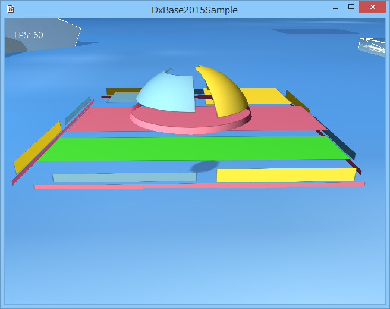
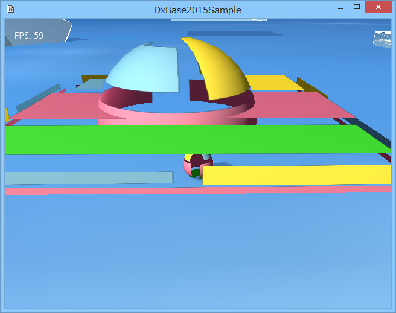

３０５．描画レイヤーの変更
透明オブジェクトの扱い
透明オブジェクトは、
GameObjectのメンバ関数で
SetAlphaActive(true);とすればそのオブジェクトは透明処理をします。
では
透明処理とは、具体的にどうしてるかというと、
ブレンドステートと呼ばれる掛け合わせ処理を実装するわけですが、問題は、
どういう順番で描画するかが重要です。
デフォルトの処理としては、まず、毎ターンごとに、
透明ではないオブジェクトをすべて描画した後、
透明なオブジェクトを描画します。
透明なオブジェクト同士の描画順は、
カメラから遠いところにあるオブジェクトから順番に描画します。
では、そのオブジェクトの位置はどこから取得してるかというと、単純にワールド上のポジション、つまり
TransformコンポーネントのPositionから取得します。
これでだいたい透明処理はうまくいくのですが、何点かケースによってはうまくいかない場合があります。
Sample305はうまくいかないケースのときの対処方法のサンプルです。
Sample305ディレクトリのソリューションを開いて、リビルド、そして実行すると以下の画面が現れます。

図3005a
中央に、ボックスと半球のオブジェクトがあります。プレイヤーをその中に潜り込ませると、図のようにプレイヤーが消えてしまいます。
これは、
透明オブジェクト同士の描画順に問題があるために起こります。
透明オブジェクトが重なってる場合、
基本的に内側から描画します。このサンプルの場合、
プレイヤー、内側の半球、外側のボックスの順番です。
直感的には、
では、オブジェクトの追加の順番を上記のようにすればいいのではと思うかも知れません。基本的にはそうです。
透明オブジェクト同士の描画順は
追加された順番にカメラとの距離を計算しますので、結果的に今回のケースではうまくいきます。
しかし、オブジェクトを動的に追加するような場合はこうはいきません。動的に追加した場合は、最後に追加されますので制御できません。
描画レイヤー
こんなときに設定するのが
描画レイヤーです。各オブジェクトは、描画を、
レイヤーごとに行います。レイヤーとは、実体は単純な
int型の値です。デフォルトは0です。
通常のものより、早く描画したければ、値を小さくします。後に描画したければ値を大きくします。
以下は、透明ボックスの
Create()関数です。レイヤーを設定しています。
void TraceBox::Create(){
//中略
//透明処理
SetAlphaActive(true);
//レイヤーを指定する場合は、以下コメントを外す
SetDrawLayer(2);
}
コメントになっていますので、コメントを外すだけで大丈夫です。ここでは
レイヤーを2にしています。
また、以下は半球の
Create()関数です。
void TraceSphere::Create(){
//中略
//透明処理
SetAlphaActive(true);
//レイヤーを指定する場合は、以下コメントを外す
SetDrawLayer(1);
}
こちらは、
レイヤーは1にしています。
このような設定で、あとプレイヤーはデフォルトのままですので、
レイヤーは0です。
そうすると、
プレイヤー、半球、ボックスの順番に描画されることになります。
その実行結果が以下です。プレイヤーが潜りこんでも消えませんし、ボックスの隙間から、半球が覗けます。

図3005b
ただ一つ問題があります。本来なら、ボックスの模様（赤い帯）は、半球内に突き抜けて見えなくてはいけません。しかし、半球をボックスより先に描画しているために、その部分は描画されません。
これを回避するには、ボックスの上部のみ、たとえばスクエアで作成し、そのオブジェクトを、
プレイヤーの後で半球の前に描画すれば、出るようになります。
あるいは、シェーダで、オブジェクト内の描画する三角形を分けるか、なども考えられます。
しかし、そのためには新たな
GameObjectを作成せねばならず。その模様（テクスチャ）も、ボックスと重なって違和感ないように調整しなければなりません。シェーダを作成するとなればもっと大変です。
こんな場合は、プリミティブで作成するのをやめて、のちのサンプルで説明する
FBXモデルを作成するか、あるいは、このような透明の重なりをなくす（一部透明でないオブジェクトもまぜ、テクスチャなどで違和感ないようにする）などの方法が望ましいでしょう。
ようは、そのオブジェクトの重要度と実装する手間、とのかねあいかと思います。